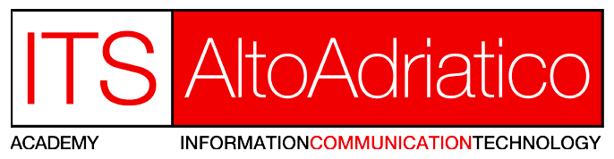

<nav class="navbar navbar-expand-lg navbar-light bg-light">
  <div class="container-fluid navbar-container">
    <div class="burgermenu-row-reverse">
      
      <button class="navbar-toggler" type="button" data-bs-toggle="collapse" data-bs-target="#navbarSupportedContent" aria-controls="navbarSupportedContent" aria-expanded="false" aria-label="Toggle navigation">
        <span class="navbar-toggler-icon"></span>
      </button>
    </div>
    
    <div class="collapse navbar-collapse" id="navbarSupportedContent">
      <ul class="navbar-nav me-auto mb-2 mb-lg-0">
        <li class="nav-item dropdown">
          <a class="nav-link active" aria-current="page" href="lista-corsi">Corsi</a>
        </li>
        <li class="nav-item">
          <a class="nav-link active" aria-current="page" href="chi-siamo">Chi Siamo</a>
        </li>
        <li class="nav-item">
          <a class="nav-link active" aria-current="page" href="contatti">Contatti</a>
        </li>

        <li class="nav-item">
          <a class="nav-link active" aria-current="page" href="news">News</a>
        </li>
        </ul>
          <ul class="navbar-nav ms-auto">
            <li class="nav-item d-flex ">
              <a class="nav-link active" aria-current="page" href="#">Login</a>
            </li>
            <li class="nav-item d-flex ">
                <a class="nav-link active" aria-current="page" href="#">Registrazione</a>
            </li>
          </ul>
          
       
        
      
    </div>

    
        <ul class="navbar-nav me-auto mb-2 mb-lg-0">
          
        </ul>
    

  </div>
</nav>


<router-outlet></router-outlet>


<footer class="footer mt-auto">
<div class="container-div-footer">
    <div class="columns-div">
    <h6>ITS ALTO ADRIATICO – PORDENONE</h6>
    <p>Istituto Tecnico Superiore, riconosciuto dal MIUR, per la formazione di persone di eccellenza su tematiche ad alto contenuto tecnologico. Le tematiche sono Data Manager, Cloud Computing, Internet of Things, Digital & Web App, Database Manager. Due anni di alta formazione per preparare le professioni del futuro!</p>
  </div>

  <div  class="columns-div">
    <h6>Menu</h6>
    <ul>
      <li><a class="dropdown-item"  href="#">La Fondazione Its: i soci e partner</a></li>
      <li><hr class="dropdown-divider"></li>
      <li><a class="dropdown-item"  href="#">Amministrazione trasparente</a></li>
      <li><hr class="dropdown-divider"></li>
      <li><a class="dropdown-item"  href="corsi">Archivio corsi</a></li>
      <li><hr class="dropdown-divider"></li>
      <li><a class="dropdown-item" href="news">News</a></li>
      <li><hr class="dropdown-divider"></li>
      <li><a class="dropdown-item" href="https://www.linkedin.com/school/fondazione-istituto-tecnico-superiore-kennedy/">Linkedin <i class="bi bi-arrow-up-right-square external-link"></i></a></li>
      <li><hr class="dropdown-divider"></li>
      <li><a class="dropdown-item" href="#">Privacy Policy</a></li>
      <li><hr class="dropdown-divider"></li>
    </ul>
  </div>
  
  <div  class="columns-div">
    <h6>RESTA IN CONTATTO CON NOI</h6>
    <div>
      <i class="bi bi-facebook i-contatti-social"></i>
      <i class="bi bi-youtube i-contatti-social"></i>
      <i class="bi bi-envelope i-contatti-social"></i>
      <i class="bi bi-linkedin i-contatti-social"></i>
      <i class="bi bi-whatsapp i-contatti-social"></i>
      <i class="bi bi-instagram i-contatti-social"></i>
    </div>
  </div>
  
  <div  class="columns-div">
    <h6>I NOSTRI CONTATTI</h6>
    <h6>ITS Alto Adriatico</h6>
    
    <p>Fondazione Istituto Superiore per le tecnologie dell’informazione e della comunicazione Alto Adriatico Via Prasecco 3a - 33170 Pordenone</p>
  
    <span>
      C.F. 91079520937
    </span>

    <span> <i class="bi bi-telephone-fill"></i> +39 0434 1697221 </span>
    <span> <i class="bi bi-envelope-fill"></i> PEC: fondazioneitskennedy@pec.it </span>
  </div>
</div>

</footer> 
